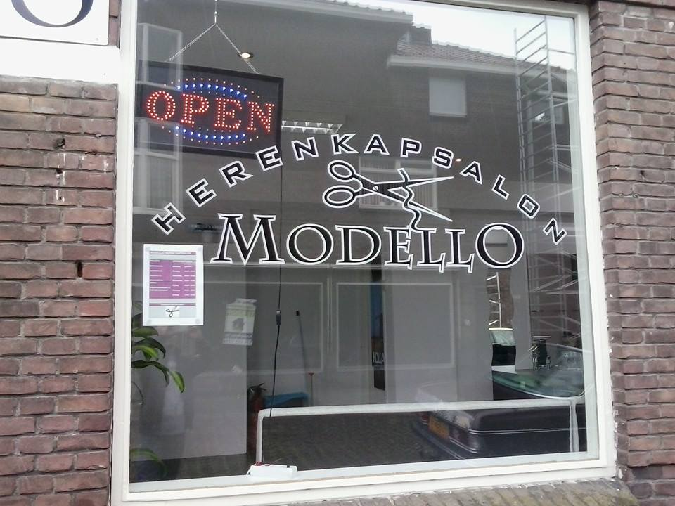

- home pagina

Ik heb in de 3e klas stage gelopen bij een kapper,herenkapper modello.Dit was een hele andere sector dan de sector die ik deed maar ik deed dit puur omdat ik geen andere opties had.
Ik vond de stage niet heel leuk en kapperzijn is niet iets voor mij.De interactie met de klanten vond ik wel leuk en we maakten vaak een praatje over verschillende onderwerpen.
ik heb nog een bijbaan maar ik ben pas van plan om een bijbante nemen als ik 18 jaar ben want ik ben 17 jaar nu en ik heb geen zin om in een supermarkt te werken of als fietsbezorger want dat lijkt me een baan voor 15/16 jarige.